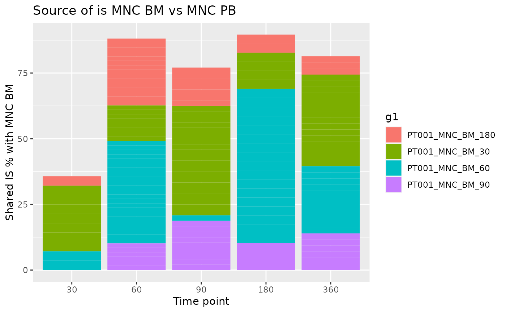

![[Stable]](figures/lifecycle-stable.svg) The function computes the sharing between a reference group of interest
for each time point and a selection of groups of interest. In this way
it is possible to observe the percentage of shared integration sites between
reference and each group and identify in which time point a certain IS was
observed for the first time.
The function computes the sharing between a reference group of interest
for each time point and a selection of groups of interest. In this way
it is possible to observe the percentage of shared integration sites between
reference and each group and identify in which time point a certain IS was
observed for the first time.
Arguments
- reference
A data frame containing one or more groups of reference. Groups are identified by
ref_group_key- selection
A data frame containing one or more groups of interest to compare. Groups are identified by
selection_group_key- ref_group_key
Character vector of column names that identify a unique group in the
referencedata frame- selection_group_key
Character vector of column names that identify a unique group in the
selectiondata frame- timepoint_column
Name of the column holding time point info?
- by_subject
Should calculations be performed for each subject separately?
- subject_column
Name of the column holding subjects information. Relevant only if
by_subject = TRUE
See also
Other Analysis functions:
CIS_grubbs(),
HSC_population_size_estimate(),
compute_abundance(),
cumulative_is(),
gene_frequency_fisher(),
is_sharing(),
sample_statistics(),
top_integrations(),
top_targeted_genes()
Examples
data("integration_matrices", package = "ISAnalytics")
data("association_file", package = "ISAnalytics")
aggreg <- aggregate_values_by_key(
x = integration_matrices,
association_file = association_file,
value_cols = c("seqCount", "fragmentEstimate")
)
df1 <- aggreg %>%
dplyr::filter(.data$Tissue == "BM")
df2 <- aggreg %>%
dplyr::filter(.data$Tissue == "PB")
source <- iss_source(df1, df2)
source
#> $PT001
#> # A tibble: 161 × 14
#> g1 g1_Su…¹ g1_Ce…² g1_Ti…³ g1_Ti…⁴ g2 g2_Su…⁵ g2_Ce…⁶ g2_Ti…⁷ g2_Ti…⁸
#> <chr> <chr> <chr> <chr> <int> <chr> <chr> <chr> <chr> <int>
#> 1 PT001_… PT001 MNC BM 30 PT00… PT001 MNC PB 60
#> 2 PT001_… PT001 MNC BM 30 PT00… PT001 MNC PB 60
#> 3 PT001_… PT001 MNC BM 30 PT00… PT001 MNC PB 60
#> 4 PT001_… PT001 MNC BM 30 PT00… PT001 MNC PB 60
#> 5 PT001_… PT001 MNC BM 30 PT00… PT001 MNC PB 60
#> 6 PT001_… PT001 MNC BM 30 PT00… PT001 MNC PB 60
#> 7 PT001_… PT001 MNC BM 30 PT00… PT001 MNC PB 60
#> 8 PT001_… PT001 MNC BM 30 PT00… PT001 MNC PB 60
#> 9 PT001_… PT001 MNC BM 60 PT00… PT001 MNC PB 60
#> 10 PT001_… PT001 MNC BM 60 PT00… PT001 MNC PB 60
#> # … with 151 more rows, 4 more variables: chr <chr>, integration_locus <dbl>,
#> # strand <chr>, sharing_perc <dbl>, and abbreviated variable names
#> # ¹g1_SubjectID, ²g1_CellMarker, ³g1_Tissue, ⁴g1_TimePoint, ⁵g2_SubjectID,
#> # ⁶g2_CellMarker, ⁷g2_Tissue, ⁸g2_TimePoint
#>
#> $PT002
#> # A tibble: 77 × 14
#> g1 g1_Su…¹ g1_Ce…² g1_Ti…³ g1_Ti…⁴ g2 g2_Su…⁵ g2_Ce…⁶ g2_Ti…⁷ g2_Ti…⁸
#> <chr> <chr> <chr> <chr> <int> <chr> <chr> <chr> <chr> <int>
#> 1 PT002_… PT002 MNC BM 360 PT00… PT002 MNC PB 360
#> 2 PT002_… PT002 MNC BM 360 PT00… PT002 MNC PB 360
#> 3 PT002_… PT002 MNC BM 30 PT00… PT002 MNC PB 360
#> 4 PT002_… PT002 MNC BM 180 PT00… PT002 MNC PB 360
#> 5 PT002_… PT002 MNC BM 180 PT00… PT002 MNC PB 360
#> 6 PT002_… PT002 MNC BM 60 PT00… PT002 MNC PB 360
#> 7 PT002_… PT002 MNC BM 90 PT00… PT002 MNC PB 360
#> 8 PT002_… PT002 MNC BM 360 PT00… PT002 MNC PB 180
#> 9 PT002_… PT002 MNC BM 360 PT00… PT002 MNC PB 180
#> 10 PT002_… PT002 MNC BM 30 PT00… PT002 MNC PB 180
#> # … with 67 more rows, 4 more variables: chr <chr>, integration_locus <dbl>,
#> # strand <chr>, sharing_perc <dbl>, and abbreviated variable names
#> # ¹g1_SubjectID, ²g1_CellMarker, ³g1_Tissue, ⁴g1_TimePoint, ⁵g2_SubjectID,
#> # ⁶g2_CellMarker, ⁷g2_Tissue, ⁸g2_TimePoint
#>
ggplot2::ggplot(source$PT001, ggplot2::aes(
x = as.factor(g2_TimePoint),
y = sharing_perc, fill = g1
)) +
ggplot2::geom_col() +
ggplot2::labs(
x = "Time point", y = "Shared IS % with MNC BM",
title = "Source of is MNC BM vs MNC PB"
)
